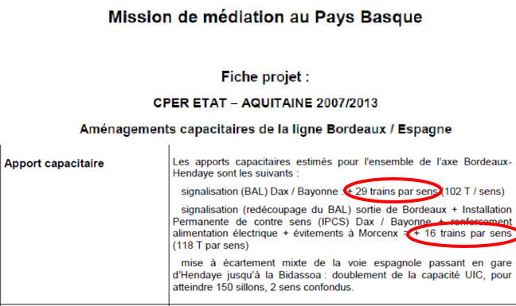

Gagnerait-on le même temps en modernisant les voies existantes ?
Ce qu'ils disent :
« Sur l’axe Bordeaux-Bayonne, la ligne nouvelle ne fait gagner que 5 minutes sur le temps de parcours par rapport à un réaménagement de la voie existante. »
L’autorité environnementale, la commission d’enquête publique, le Conseil d’Orientation des Infrastructures (COI), le Conseil Général à l’Investissement (CGI) sont unanimes pour dire que le gain de temps entre Bordeaux et Dax avec une LGV est quasiment nul de l’ordre de 5 minutes par rapport à la ligne actuelle modernisée. Ceci d’autant plus que la LGV allonge le trajet de 33 kms.
« C’est vrai. » reconnaissent les promoteurs qui s’empressent d’ajouter :
« Mais si on ne fait qu’un relèvement de vitesse à 220 km/h en modernisant la voie, on diminue la capacité de l’axe et on ne permet pas au fret ni aux trains régionaux du quotidien de se développer» et relever la vitesse « coûte aussi cher que la réalisation d’une ligne nouvelle de Captieux à Dax, alors qu’elle apporte moins de services »
Vérifions les faits : tout ceci est faux.
- Le 22 février 2012, RFF présentait les travaux menés sur la ligne existante
Bordeaux-Espagne
(signalisation, modernisation, évitements à Morcenx, installations permanentes de contre-sens). Le CADE
demande l’impact sur la capacité de la ligne. Réponse de RFF : ces travaux assurent un meilleur confort, mais ne génèrent pas d’augmentation capacitaire.
RFF est pris en flagrant délit de mensonge par la projection du document suivant émanant de ses propres services :
Ce document fait état d’une augmentation capacitaire de 45 trains par sens !
- La capacité de la ligne peut être encore augmentée grâce au système de signalisation
ERTMS. Selon la SNCF, ce système donne au conducteur des informations en temps réel : occupation de la
ligne, poids du train, vitesse limite, capacité de décélération et de freinage. En fonction de ces
données, le conducteur ajuste son comportement, connaît sa vitesse optimale et stoppe le train en cas
d'urgence.
Selon Laurent Zylberberg, Directeur des relations institutionnelles, internationales et européennes de la Caisse des Dépôts l’ERTMS « permet de renforcer la performance du trafic ferroviaire sur les grandes lignes, les lignes de fret et les lignes régionales, ce qui facilitera la circulation des trains en France dans les territoires ainsi que dans les autres Etats de l’Union Européenne ».
La capacité actuelle de la ligne est de 264 trains par jour (132 par sens) entre Bordeaux et Dax. Au point le plus contraint entre Bordeaux et Facture (desserte d’Arcachon), il circulait en 2022 100 trains par jour, 50 trains par sens. (Source : Atlas du Réseau ferré, Editions 2023, SNCF Réseau, page 42 et suivantes).
- Sur le tronçon Langon-Montauban de la ligne existante Bordeaux-Toulouse circulent actuellement
59 trains par jour (30 par sens) pour une capacité de 168 trains, soit un taux
d'occupation de la ligne de 35%. Cette capacité pourrait être augmentée à 288 trains en remplaçant le
système de signalisation contraignant BARP (Bloc automatique à permissivité restreinte) entre Langon et
Montauban par le système BAL (Bloc Automatique Lumineux). Ainsi le taux d'occupation de la ligne
passerait à 18%.
Sources : Relevé du "recueil statistique des transports en Nouvelle Aquitaine 2019 - mai 2021. 20 TER, 14 Intercités, 13 TGV et 12 trains de fret ; étude CLERC (ou étude Claraco)
Il est donc faux de dire que cette ligne est proche de la saturation.
.
-
Non, rénover la ligne ne revient pas aussi cher que construire une LGV !
Tous les rapports sont unanimes :
« L’aménagement des lignes existantes conventionnelles, est rarement prise dûment en considération, alors qu'elle pourrait permettre de réaliser des économies non négligeables. » (Source : Rapport spécial 2018. « Réseau ferroviaire à grande vitesse européen : fragmenté et inefficace, il est loin d’être une réalité. » Cour des comptes européenne. page 9)
Le rapport de 2018 du Conseil d’Orientation des Infrastructures (COI) conclut : « L’opportunité de ligne nouvelle Bordeaux-Dax doit être réinterrogée à plus longue échéance. Il semble en effet que moyennant des travaux de relèvement de vitesse sur la ligne, il est possible d’obtenir quasiment les mêmes bénéfices qu’une ligne nouvelle à un coût bien moindre. »
SNCF Réseau affirme le contraire, comment le croire ? Vérifions les faits :
Construire une ligne nouvelle nécessite :
- De coûteuses études préparatoires
- De nombreuses acquisitions foncières
- D’importants travaux préparatoires : déplacements de réseaux, préparation des emprises, réfections de clôtures, rétablissements provisoires de communication, stockage de la terre végétale, piste de chantier éventuelle, etc.
- Des volumes de terrassements toujours très conséquents, avec de forts déficits de matériaux d'apport, comme c'est le cas pour le GPSO
- Des transports de matériaux par voie routière ou aérienne et pas par voie ferrée comme pour la rénovation d’une ligne
- Un grand nombre de rétablissements de routes (voirie départementale, communale, chemins ruraux d'exploitation, accès privé, etc.)
- La construction de nombreux viaducs, ponts pour franchir les cours d’eau, de divers ouvrages d’art. Dans le cadre du GPSO, ce poste est d’un montant considérable en raison de la multiplicité des ouvrages. Ces ouvrages sont déjà présents sur une ligne existante
- L’assainissement de la ligne d’un coût significatif dans le cadre de l'application de la loi sur l'eau (l’assainissement des lignes existantes n’est pas à réaliser).
- La construction de protections phoniques
- L’équipement de la ligne…
Sur la ligne actuelle Bordeaux Espagne (près de 600 millions d’euros ont déjà été investis) :
- Rails, traverses et ballast ont été changés entre Dax et Hendaye en 2009 et 2011 entre Dax et Morcenx en 2019 et 2020 et récemment sur 55km entre Facture et Talence ;
- Un pont ferroviaire neuf enjambe l’Adour à Bayonne ;
- Une nouvelle signalisation a été installée ;
- Des voies d’évitement ont été construites ente Dax et Lamothe ;
- Des indicateurs permanents de contre-sens entre Dax et Hendaye permettant aux trains de se doubler en empruntant l’autre voie à contre-sens.
Voici le détail des travaux déjà réalisés :
Secteur Type de travaux Montant Base de travaux à Laluque Pour réalisation travaux Bordeaux-Hendaye 12 M€ Bayonne-Hendaye 2009 Rails, traverses, ballast sur 2 voies 55 M€ Bayonne-Dax 2010/2011 Rails, traverses, ballast sur 2 voies 90 M€ Pont sur l’Adour Remplacement 40 M€ Modernisation gares 2009/2011
2 Jum Hendaye, Biarritz, DaxAccessibilité, souterrains… 13 M€ Aménagements Bordeaux-Dax
2011/2013Aménagement signalisation
Voies évitements entre Dax et Lamothe30 M€ Aménagements Bordeaux-Dax
2011/2013Aménagement signalisation
Voies évitements entre Dax et Lamothe30 M€
20 M€Aménagements Dax-Hendaye
2009/2013Nouvelle signalisation et IPCS
Renforcement alimentation électrique
Gare d’Hendaye amélioration manœuvres des trains internationaux60 M€
30 M€
15 M€Bayonne-Hendaye 3km rénovés
2021Rails, traverses, ballast 26km sur 2 voies
(tunnel St Esprit-Pont sur Adour et Guéthary)2,9 M€ Dax-Morcenx 65 km rénovés
2019/2020Rails, traverses, ballast 26km sur 2 voies
Ballast et traverses sur 39km
2 IPCS (Morcenx, Laluque)83 M€
52 M€Bordeaux-Biganos 39km rénovés
2021Rails, traverses, ballast 35km sur 2 voies
Ballast et traverses sur 39km86 M€ TOTAL 588,9 M€
Et ceux programmés :Secteur Type de travaux Montant Marcheprime-Ychoux (77km)
08-2023/02-2024Rails, traverses, ballast 121 M€ Ychoux-Morcenx (33km)
2026Rails, traverses, ballast ? Contrairement à ce qu’affirment les promoteurs du projet, les travaux sur les lignes existantes entraînent peu de contraintes d’exploitation. En effet, SNCF Réseau utilise la nuit un train usine Boa de TSO filiale de NGE, pour réduire les conséquences sur les circulations. En moyenne, le Boa est capable de renouveler entre 600 et 800 mètres de rails, contre 300 et 400 mètres avec des méthodes classiques. Une fois le train usine passé, les circulations peuvent reprendre à vitesse normale, ce qui limite l’impact sur l’exploitation. (Source)
- La desserte de Mont de Marsan peut être parfaitement assurée par la rénovation et la modernisation du barreau ferroviaire Mont de Marsan-Morcenx. Combien de TGV s’arrêteront à Mont de Marsan ? On peut déjà l’affirmer quelques rares TGV nationaux et aucun TGV international.